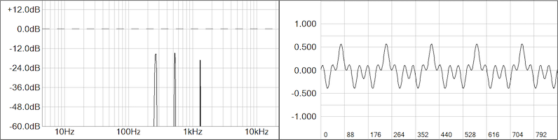

In this module, we'll create an oscillator core object from scratch using the general purpose Oscillator object. We will use the same simple method of generating sinusoids as we used in the LFO but will use Chebychev polynomials to add harmonics in an additive synth manner. The mod knobs A, B, C, and D will control the amplitudes of the additive oscillator's first 4 harmonics above the fundamental and we will use them as if the user were manipulating a GUI (which of course you may add later using your plugin framework).
The first set of Chebychev polynomials is shown below. We will use T2, T3, T4 adn T5 as waveshapers to generate the harmonics from the fundemantal. I am not going for efficiency here, so please don't complain on your Forums or send me hate-mail. There is a method of using the results of one polynomail to generate the next and so you are welcome to research that and change the code to reflect it.
There is a general purpose SynthModule object named Oscillator that we will use, along with its companion OscParameters data structure. It will not use wavetables or any databases. We will develop it in stages. Here are a couple of the kinds of additive waveforms it produces under our test conditions:
SynthLab Core Template
The SDK contains a pair of source files that are a template for new ModuleCore development and are essentially blank starting points for any kind of core. The files are named synthlabcore.h and synthlabcore.cpp and you need to copy those files into your project and rename them (if you like) as you may be re-using these files many times in your projects.
For the demo project here, I have renamed them addosccore.h and addosccore.cpp and using a text editor, I changed the class name to AddOscCore in both files.
You will need to add the following files to your project:
- oscillator.h and oscillator.cpp
- synthlabcore.h and synthlabcore.cpp (rename if you like)
The template files have everything you need to get started.
SynthLab Core .h File
We need to add a timebase and a MIDI pitch variable to the oscillator and we will use the SynthClock modulo counter. Add a static instance to the class declaration. The MIDI pitch value will be set during the note-on handler and will control the timebase phase increment value. Next, copy and add the Chebychev waveshaper function:
SynthLab Core .cpp File
Lets hop into the Constructor and setup the waveforms. For this oscillator, we will have 2 waveforms (or patches).
- sine
- additive
The mod knob labels (which you may use to remember the functionality) are: A. "Harm_2" B. "Harm_3" C. "Harm_4" D. "Harm_5"
Now we will step through the functions in the .cpp file, just as we did for the LFO, adding the code as needed.
Constructor: Waveform Names
Open the .cpp file and change the module type, add a name and alter the waveforms and mod knobs per the plan.
update( )
For the update phase, we only need to transfer the MIDI pitch value that arrived during the note-on event to set the oscillator timbase frequency. We do this here (rather than doNoteOn) because we will change this in the next module to add pitch modulation and GUI control manipulation.
render( )
For the render function, we need to grab the audio output buffers and go into a loop to generate the block of samples requested.
- when the user selects the "additive" patch, note how I bring down the overall amplitude of the waveform to make up for the fact that the user could max out all of the harmonic amplitude controls at 1.0
- notice how the mod knob values are transferred from the parameter structure; this would come from a GUI control
Step 1: get the audio buffer pointers and go into the block processing loop:
Step 2: Start the decision tree that will decode the waveform index and generate the fundamental wavform which is needed for the others. Refer back to the LFO tutorial regarding the timebase and 2pi multiplication.
Step 3: For the additive code, I am first grabbing the harmonic amplitudes fromt the parameter structure; we're using the mod knobs to test with. Then, create the output for this waveform.
Now that the output is rendered, write to the output buffers, outside of the decision tree but inside of the block processing loop, and then advance the clock.
doNoteOn( )
For this message handler we only need to store the MIDI pitch that arrives in the MIDI event structure and reset the oscillator timebase in the case that this is not the first time a note has been played. You may move this reset() function call to the note-off handler if that makes more sense to you. Note that the MIDI structure also includes the MIDI note number and velocity values [0, 127].
Modify the Oscillator Object
Now that the core is complete, we need to modify the Oscillator object to load this core at construction time. This only requires modifying the constructor to load the core. A comment has been left in the Oscillator constructor for you.
Testing the Oscillator and Core
You have several options here and if you went through the MinSynth tutorial then you already have an obeject to test with. Regardless of how you test it, you will still need to follow the same steps. And remember that for testing I am using the mod knobs as fake GUI parameter controls for the harmonic amplitudes (another reason that they exist). Testing follows the same pattern as with the individual standalone objects, or the MinSynth voice object.
Create the Oscillator Instance
Update the object for Waveform[0]
There is no need to manipulate the mod knobs yet.
Send a Note-On Event
You can get this from a live MIDI source or fake it to test as done here.
Render the Oscillator
Render the oscillator and loop over the audio block for the output values. Remember that we set the blockSize variable at construction time.
Update the object for Waveform [1]
After testing and hearing a bland sinusoid, try the 2nd waveform that is additive. Here, I am using the mod knobs for harmonic amplitudes.
Testing Waveform [1]
Test this oscillator waveform and you should see something like Figure 2 in your oscilloscope and spectrum analyzer showing the fundamental plus four harmonics with various amplitudes.
Go back and adjust the mod knobs to see the image in Figure 3.:
- A = 1.0
- B = 0.0
- C = 0.0
D = 1.0

Add Pitch Modulation Code
In the next section, we will add the pitch modulation code. You may test the oscillator connected to your LFO in the MinSynth object if you've been following the tutorials.